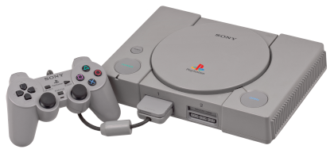
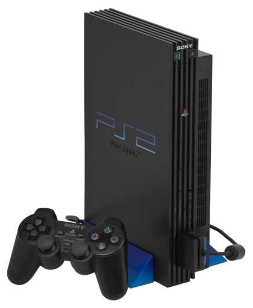

PlayStation One
Foi lançado em 3 de dezembro de 1994, no Japão, e em 29 de setembro de 1995, nos Estados Unidos. Desde o seu lançamento até 2006 (quando sua produção foi extinta), a PlayStation vendeu mais de 103 milhões de unidades. Inicialmente PlayStation seria um leitor de CD-ROM para o Super Nintendo Entertainment System, o SNES-CD, a ser produzido em conjunto com a Nintendo.[2] Durante as negociações para o lançamento, o acordo entre as empresas foi rompido. Então o engenheiro Ken Kutaragi convenceu os executivos da Sony a continuar com o projeto. Foi aí que nasceu a divisão Sony Computer Entertainment (atualmente Sony Interactive Entertainment), com o objetivo de implementar no mercado uma nova consola de videogame: a PlayStation.
Os seus principais concorrentes eram a Nintendo 64 e a Sega Saturn, dentre seus jogos de maior sucesso destacam-se os dois primeiros Gran Turismo, a série Tekken, série Tomb Raider, série Ridge Racer, a série Resident Evil, série Need For Speed, série Crash Bandicoot, Dragon Quest VII, Spyro, Silent Hill, Driver, entre outros. A produtora Squaresoft tornou se exclusiva da consola lançando jogos de sucesso como a série Final Fantasy, Parasite Eve, Chrono Cross, Vagrant Story entre outros.
PlayStation 2
O PlayStation 2 (PS2) é o segundo console de videogame produzido pela Sony Computer Entertainment, após o PlayStation original. Foi inicialmente lançado no dia 4 de março de 2000 no Japão, no dia 26 de outubro na América do Norte, e posteriormente, no dia 24 de Novembro na Europa. O PlayStation 2 possui hoje o título da consola de videogame mais vendida na história: foram mais de 150 milhões de unidades comercializadas no mundo.
No Brasil, de acordo com a Sony, o PlayStation não foi vendido oficialmente devido à pirataria e uma disputa judicial pelos nomes Playstation e PS2, pois estas marcas já estavam registadas por uma empresa. Apesar disso, houve um grande "mercado informal" de consolas e jogos. Em 2009 a Sony do Brasil finalmente lançou a linha PlayStation 2 no país, vendendo ainda jogos de PlayStation 3.[3]